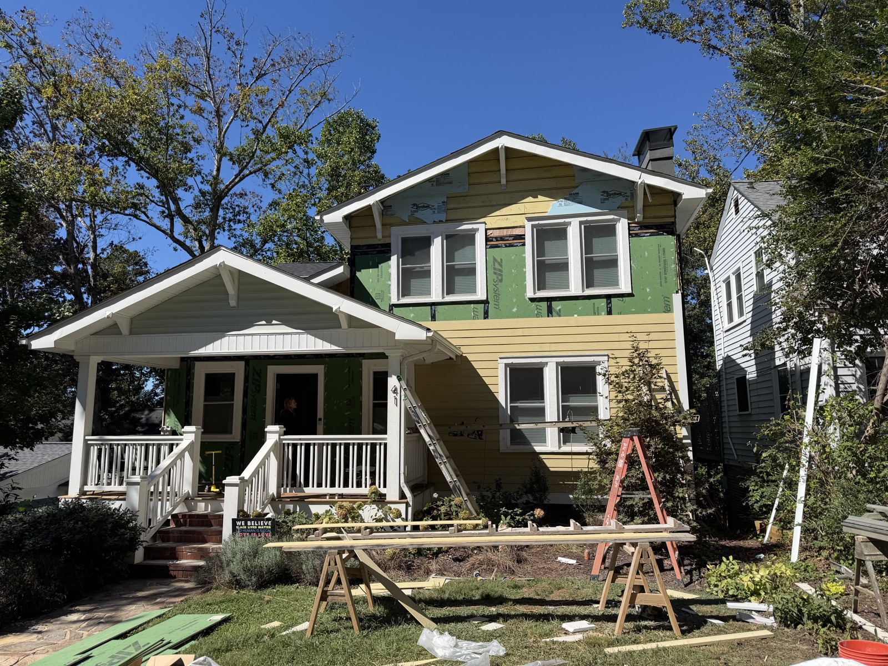
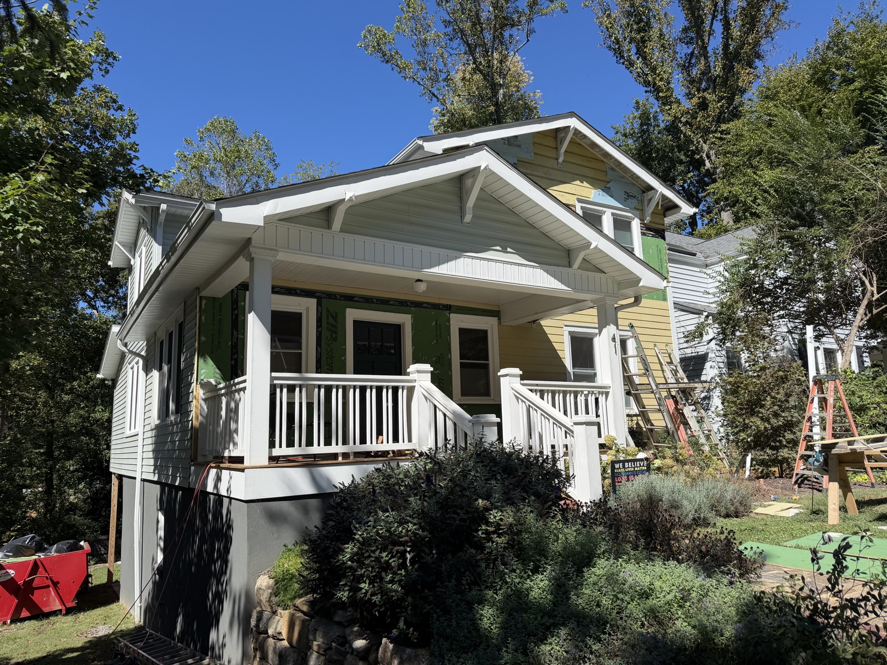
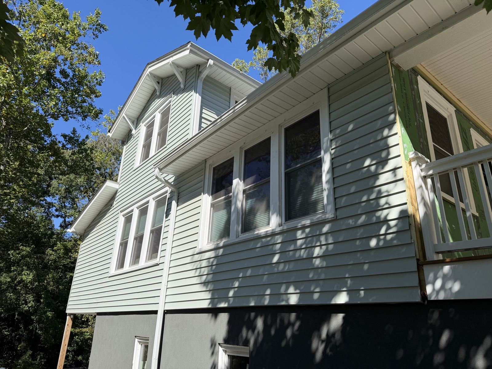
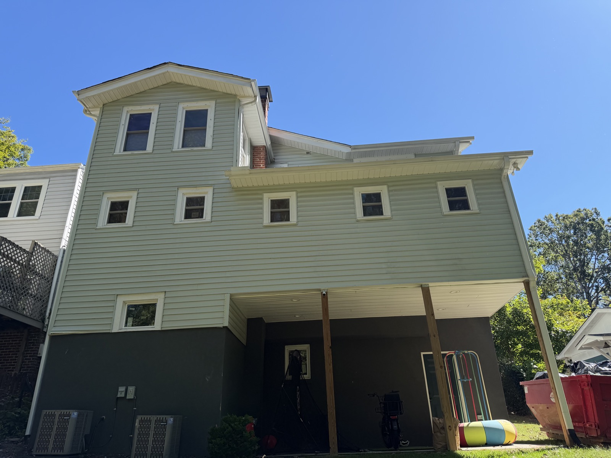

Hardie lap siding & shingle gables
Drag to rotate · Scroll to zoom · Right-drag to pan




Saved in this browser. Apply a look to see it on the house.
This is an architectural approximation based on your four photos, with the new siding shown as finished. The front gables, porch, railings, windows, chimney, and downhill foundation are modeled to help you explore color relationships.
Dimensions, hidden elevations, the roof connections, and surrounding landscape are inferred. This is not a measured survey or a photorealistic paint preview. Lighting is illustrative, not a sun study for the address.
The palette uses Sherwin-Williams’ published digital values from its exterior house, accent, and front-door collections, filtered to colors marked for exterior use. Paint appearance still varies with light, surface texture, and your screen. The gables use straight-edge Hardie-style shingles and always share the lap siding color. The body uses overlapping lap siding. Roof, window glass, masonry, and landscaping stay fixed while you explore the painted surfaces.
Color sources: House colors, accent colors, and front-door colors. This studio is not affiliated with Sherwin-Williams or James Hardie.